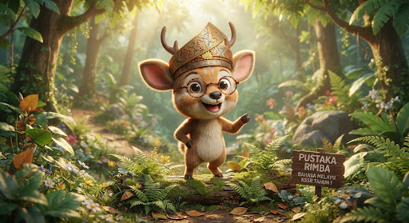
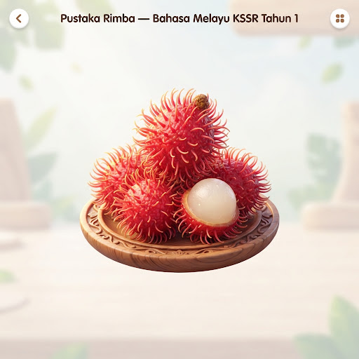
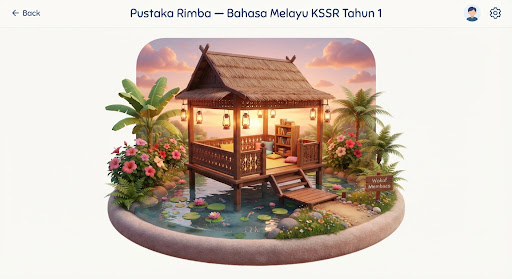

menu_book
KSSR BAHASA MELAYU TAHUN 1
star
5 / 6 Bintang Ilmu
Pustaka Rimba Ajaib auto_stories
Bab 5 drp 6: Cerita Teladan Sang Kancil & Cantum Suku Kata
forest Kemajuan Pustaka
83% Selesai

psychology
Sang Kancil Pintar
verified
“Hebat Wira Adam! Mari cantum suku kata & bantu Sang Kancil seberang sungai untuk pasang Wakaf Membaca!”
sports_score
Cabaran 2 / 3
bedtime Santai & Ceria
Bantu Kancil Mencari Buah Rimba
Pilih suku kata yang betul untuk melengkapkan nama buah kegemaran Sang Kancil:

eco
RAM
Suku 1
BU
Pilihan Kamu
TAN
Suku Akhir
lightbulb
Petua Sang Kancil: Bunyi huruf vokal ‘u’ berbunyi bulat panjang seperti burung hantu “uuu”!
map
6 Bab KSSR
Peta Pustaka Rimba
check
Bab 1: Huruf Vokal A, E, I, O, U
Tamat Cemerlang
star
star
star
check
Bab 2: Gabung Konsonan & Vokal (KV)
Tamat Cemerlang
star
star
star
check
Bab 3: Suku Kata Terbuka & Tertutup
Tamat Cemerlang
star
star
star
check
Bab 4: Frasa Mudah & Kad Bergambar
Tamat Cemerlang
star
star
star
play_circle
Bab 5: Cerita Teladan Sang Kancil
Sedang Dijalankan (Cabaran 2/3)
lock
Bab 6: Pustaka Warisan & Pantun Cilik
Buka selepas selesai Bab 5
drive_file_stream Projek Kampung Wira
Ganjaran Bab 5

Wakaf Membaca & Lampu Pelita
Membina tempat membaca tepi tasik teratai untuk kawan-kawan Kampung Wira.
star +50 Bintang
monetization_on +120 Syiling